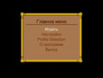
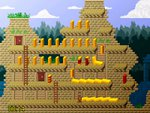
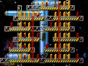
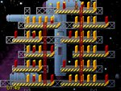
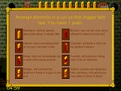

Pushover
Pushover is a fun puzzle game originally published by Ocean in 1992. In this game you control an ant that can walk along platforms that are connected with ladders. On those platforms are dominos that need to fall according to some rules.
- All dominos must fall and none must crash into another
- One special domino must fall as last domino and that domino triggers the exit door to open when you enter the exit door the level has been completed
- You may rearrange as many dominos as you want, except for the trigger. You may not place dominos in front of the doors, except for the vanishing domino.
- You may push push once to start a chain reaction with the dominos leading to the fall of all of them
- All this has to be done within a time limit (which is normally generous)
- There are 11 different dominos that behave differently when pushed, some fall, some not, some wait a bit before they fall, some raise, some toppler until they meet an obstacle
- There is a help in the game and introductory levels that show how all the dominos work
Right now the game uses reformatted graphics for some of the themes and we already have updated graphics for other themes. We are in the process of replacing them with new high resolution graphics.
Below are some screenshots of the game
| 
This image shows the main menu in the russian translation after starting the game |

This image shows a typical level while the dominos are falling |
|


Another level with the graphics from the original Pushover game and our new graphics for comparison |

The help window when opend in a level helps identifying the different domino types |
{kind=link}
{kind=link}
{kind=link}
{kind=link}
{kind=link}
Download
| Latest versions | |
| Source (for all systems, as long as you get it compiled) | |
| Windows Binary (in zip archive) | |
Todo
Future plans for the game include:- Level editor
- New puzzles
- Replace original graphics: started
- Include music: started
News
| News | |
| 19.05.2013 |
Version 0.0.5 brings a a few little improvements
|
| 26.01.2013 |
Version 0.0.4 brings a pile of new usability enhancements....
...general improvements...
...and bug fixes
We are in the process of registering Pushover with the Translation Project. So if you want to help translating Pushover you are welcome to join the project. Also we are still looking for an artist that can repaint the ant... this seems to be not for the faint of heart as we did have 3 different artists asking for the information but none of them returned with any results. So if you feel keen mail us. |
| 11.05.2011 |
Version 0.0.3 has been released. Well Pushover is slowly but it is progressing. The highlights of this new release are:
|
| 19.12.2009 |
Version 0.0.2 has been released. This release features internationalisation (translations for German are complete, Russian and Czech translations are available but incomplete), graphic replacements for 4 out of 9 themes, original music for 5 out of 9 themes. We also created 6 new levels in the A&V levelset. There are some small fixes to the game mechanics that makes the game behave nearly identical to the original I hopefully fixed an endian problem with the graphics loader We still need an artist that can recreate the graphics for the ant. So if you think that that could be fun to do, please contact me. I have prepared everything to make it as easy as possible. Also if you want to translate the texts of Pushover you
can contact me. We are using the FreeSans |
| 15.11.2008 |
Version 0.0.1 the original release was missing some level files. Those missing files made the program stop with an error. I've added the missing files and re-uploaded the archives. Please download again |
| 15.11.2008 |
Version 0.0.1 of Pushover released. The first public release of the game. You can play all the original levels. Sound effects are in place. The original graphics have been converted and included. Replacement graphics for the dominos exist. There are a few small fixes when compared to the original, for example level 49 from the original offered a probably not intended solution. We've also prepared some new levels. They were designed by Volker and I have been the tester and sometimes provided an idea. So have fun playing and remembering the old times |
Contact
You can make bug reports and feature requests on the
project page .
If you have bug reports or improvements please add them to the tracker on the project page.
.
If you have bug reports or improvements please add them to the tracker on the project page.
If you want to contact me personally mail to my sourceforge adress: roever at users dot sourceforge dot net
Development
If you want to contribute changes, improvements, fixes or whatever I suggest you get yourself the darcs revision control system. I use that system for the development.
The repositories are available at http://pushover.sf.net/repos/head.
The repositories are read only, so if you want to send me your changes you have to use the send feature of darcs. I will then apply the changes you made. The repository will be updated by me on a daily basis, when development goes on.
Credits
I want to thank the developers of the original game for making such a nice little game.
I also want to thank Volker his help with the project, Roberto for his music and Harald for his graphics
Webspace by: